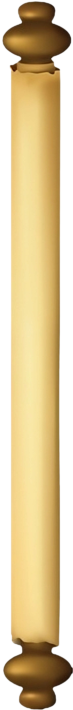
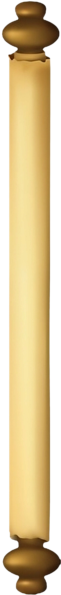

A Verdadeira
Experiência Medieval
 


Bem-vindo, bravo aventureiro, à Toca do Dragão!
Entre e sinta-se em casa, onde as chamas do dragão aquecem o salão e os
aromas dos banquetes preenchem o ar. Nossa taverna é um refúgio para
heróis, bardos, magos, e todos aqueles em busca de boa comida, aventuras
épicas, e momentos inesquecíveis. Aqui, cada prato conta uma história e
cada brinde celebra a jornada.
Prepare-se para explorar o que há
de mais delicioso no reino e deixe sua
aventura começar!
A Toca do Dragão nasceu de uma ideia que ganhou vida em sala de aula, movida pela paixão de sete amigos – Brunno Malta, Isabelly Vitória, Nathalia Bilibio, Leonardo Rodrigues, Cezar K., Israel Aecius e Vinicius Lianes. Sob a mentoria do professor de Administração Antonio Daffara Neto, transformamos nossa visão em realidade: um restaurante inspirado no mundo de fantasia medieval, onde cada prato é uma aventura e cada visitante é tratado como um herói.


Especialidades
Churrasco Rústico
Oferecemos um churrasco rústico, com carnes nobres grelhadas e temperos tradicionais. As carnes são preparadas com técnicas de defumação e servidas com acompanhamentos robustos,proporcionando uma experiência autêntica e saborosa.
Mixologia
Na Toca do Dragão, a mixologia é destaque com coquetéis exclusivos, elaborados com ingredientes frescos e artesanais. Drinks inovadores, alcoólicos e não alcoólicos.
Confira nosso cardápio
Faça sua reserva